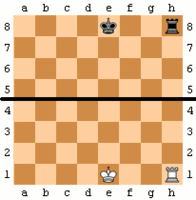
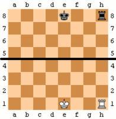

Урок четвертый. Ходы.
Игра заключается в том, что игроки поочерёдно делают ходы. Первый ход делают белые. За исключением взятия на проходе и рокировки, описанных ниже, ход заключается в том, что игрок перемещает одну из своих фигур на другое поле по следующим правилам:
- Фигуры (кроме коня) передвигаются по прямой линии, при этом все промежуточные поля между начальным и конечным должны быть свободны (на них не должно быть своих или чужих фигур). Исключением является ход коня, см. ниже.
- Ход на поле, занятое своей фигурой, невозможен.
- При ходе на поле, занятое чужой фигурой, она снимается с доски (взятие).
- Король ходит на соседнюю клетку по вертикали, горизонтали или диагонали.
- Ферзь ходит на любое расстояние по вертикали, горизонтали или диагонали.
- Ладья ходит на любое расстояние по вертикали или горизонтали.
- Слон ходит на любое расстояние по диагонали.
- Конь двигается на две клетки по вертикали и затем на одну клетку по горизонтали, или наоборот, на две клетки по горизонтали и на одну клетку по вертикали, тем самым движение коня напоминает заглавную букву «Г» кириллического или заглавную букву «L» латинского алфавитов. Согласно формулировке в международных[6] и российских[8] правилах, конь ходит на одно из полей, ближайших к тому, на котором он стоит, но не на той же самой горизонтали, вертикали или диагонали. При этом цвет поля, на которое ходит конь, всегда противоположен цвету поля, на котором он стоит. Конь отличается от остальных фигур также тем, что другие фигуры, стоящие на пути коня, не препятствуют его ходу (он через них «перепрыгивает»).
- Пешка может ходить только вперёд (направлением «вперёд» называется направление к восьмой горизонтали для белых или к первой для чёрных): без взятия — на одно поле вперёд по вертикали, а со взятием — по диагонали на одно поле вперёд-вправо или вперёд-влево. Если пешка находится на начальном поле (вторая горизонталь для белых и седьмая для чёрных), то кроме этого, она может сделать ход без взятия на два поля вперёд. Когда пешка ходит на последнюю горизонталь (для белых — на восьмую, для чёрных — на первую), она заменяется по выбору игрока на любую другую фигуру того же цвета, кроме короля (превращение пешки). Превращение пешки является частью того хода, которым она перемещается на последнюю горизонталь. Таким образом, если, например, превращённая из пешки фигура угрожает королю противника, то этот король в результате хода пешкой на последнюю горизонталь немедленно оказывается под шахом.
Ходы всех фигур показаны на диаграмме ниже. Знаками «Х» отмечены поля, на которые может переместиться фигура с того поля, на котором она
находится сейчас.
Поле называется находящимся под ударом или битым, если при своём ходе фигура могла бы взять находящуюся на этом поле фигуру противника
(независимо от того, есть ли такая фигура на этом поле). Поле считается битым, даже если фактически ход фигурой туда невозможен, так как
ставит под бой собственного короля.
 


Особые ходы
Существует два особых хода:
- Рокировка — если король и одна из ладей того же цвета не двигались с начала игры, то король и эта ладья могут в один ход одновременно сменить положение (рокироваться). При рокировке король сдвигается на две клетки по направлению к ладье, а ладья ставится на поле между начальной и конечной позицией короля. Рокировка невозможна, если король или соответствующая ладья уже ходили. Рокировка временно невозможна, если между королём и ладьёй находится какая-либо фигура, а также если поле, на котором стоит король, или поле, которое он должен пересечь, или поле, которое он должен занять, находится под ударом одной из фигур противника. Для целей правила «тронул — ходи» рокировка считается ходом короля, поэтому рокировку следует начинать с перестановки короля, а не ладьи.
- Взятие на проходе — когда пешка совершает ход на две клетки через битое поле, находящееся под ударом пешки противника, то ответным ходом она может быть взята этой пешкой противника. При этом пешка противника перемещается на битое поле, а взятая пешка снимается с доски (пример см. на диаграмме). Взятие на проходе возможно только непосредственно в ответ на ход пешки через битое поле, на следующих ходах оно уже не разрешено.